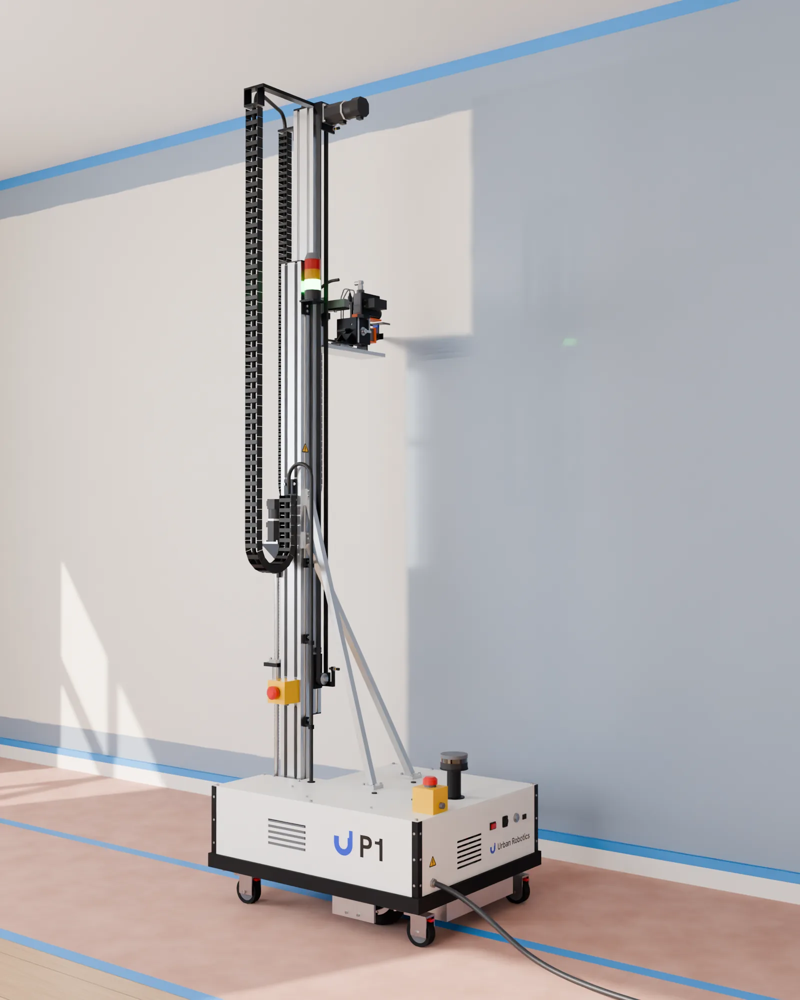
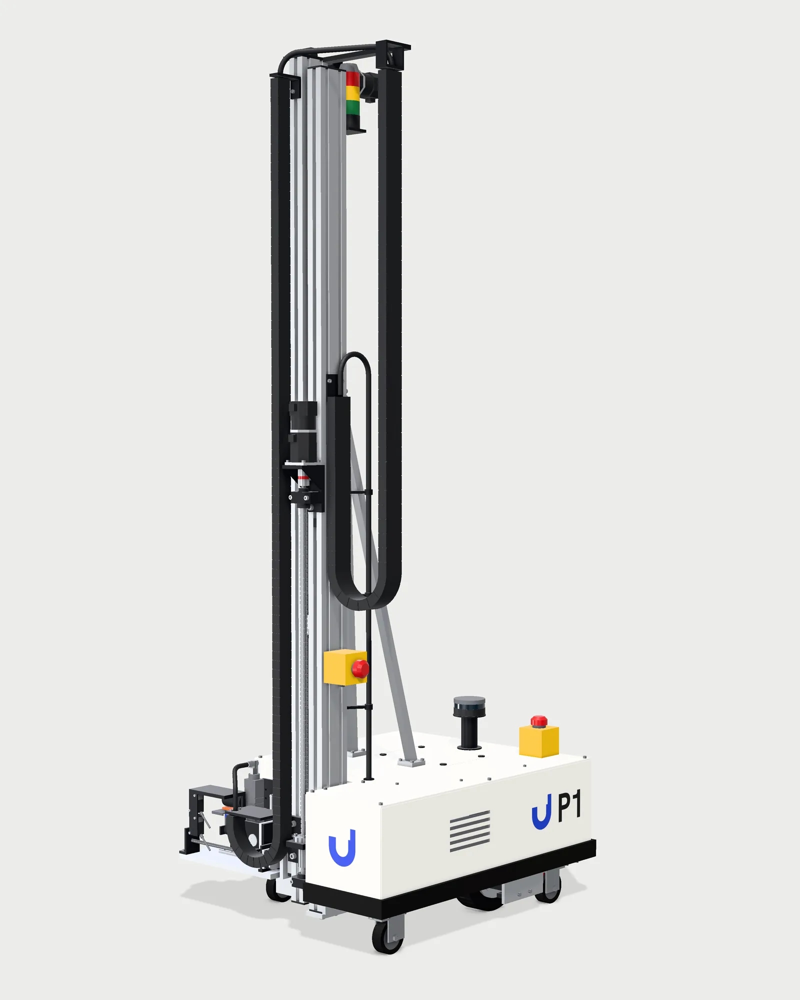
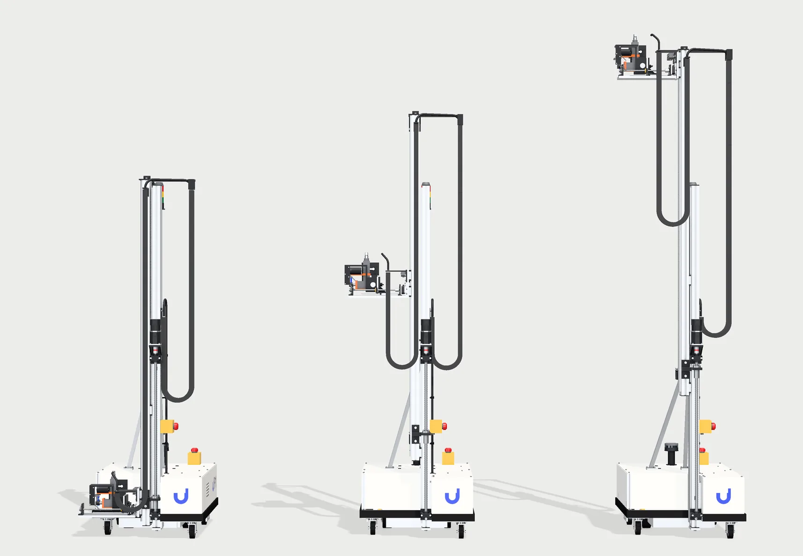
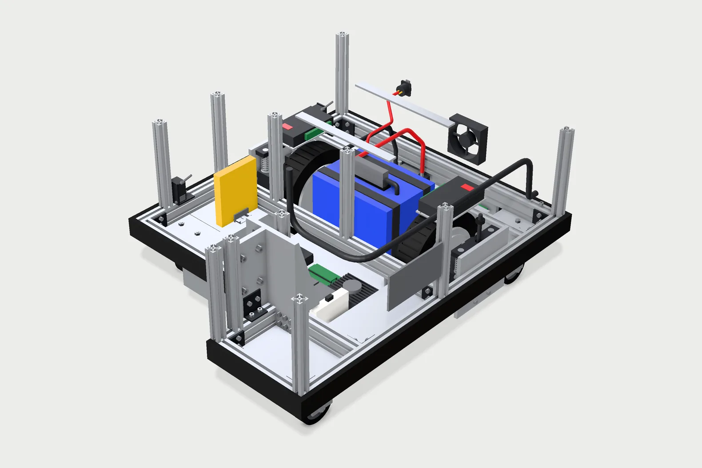

Interior repainting, by robot.
P1 is a wall painting robot for apartment turnovers and commercial interiors. It drives along a wall and sprays it from floor to ceiling, one strip at a time, while a painter supervises.
P1 is in development. We are building the first prototype in Miami.

Why P1
Repainting is repetitive, physical work. The U.S. Bureau of Labor Statistics lists falls from ladders and muscle strains among the common hazards for painters, and projects about 24,900 openings for painters each year through 2035.
P1 is designed to take on the open wall area, the most repetitive part of a repaint, so painters can spend their time on prep, cutting in and trim.
How it works
Prep
The painter preps the room as usual: clears it, masks trim and floors, and connects P1 to an airless paint pump.
Scan
P1 maps the room with its LiDAR and finds the wall with a depth camera and laser distance sensors.
Spray
It drives along the wall and sprays vertical strips from floor to ceiling, holding the spray tip at a set distance from the surface.
Finish
The painter checks the coat, cuts in edges and trim, and sends P1 to the next wall.
This is how P1 is designed to work. We will test each step on the prototype.
The machine
P1 is a wheeled base with a telescoping mast. The base carries the battery, drives and controls; the mast carries the spray head up and down the wall.

- Status light. Shows from across the room when P1 is driving or spraying.
- Two stage mast. Lifts the spray head from 0.19 m to 2.55 m above the floor.
- Cable and hose carriers. Guide the paint hose and wiring as the mast extends.
- Emergency stops. One on the mast and one on the deck, both within reach.
- LiDAR. Scans the room for walls, doors and obstacles.
- Spray head. An airless spray gun on a slide that sets its distance to the wall.

Design targets
- Footprint
- 620 × 770 mm
- Width, head parked
- 675 mm, through a 30 inch door
- Height, mast down
- 1.96 m, under a standard 80 inch door
- Nozzle height
- 0.19 to 2.55 m
- Weight
- About 80 kg
- Drive
- Two hub motor wheels and four casters
- Power
- 24 V LiFePO4 battery
- Paint
- Airless spray gun fed by an external pump
- Sensing
- LiDAR, depth camera, laser distance sensors
Numbers come from the current CAD model. The prototype has not been built yet, and these numbers will change as we test it.
Inside the base
An aluminum frame holds the battery, drive wheels, controls and safety relay low in the base, which keeps the center of mass low when the mast is raised. P1 is built from standard industrial parts that can be bought and replaced.

Safety
- A trained operator supervises every job and can stop P1 at any time.
- Two emergency stop buttons, on the mast and on the deck, cut power to the drives and the spray trigger through a safety relay.
- Airless sprayers work at pressures up to about 5,000 psi. P1 sprays only inside a cleared and marked work area.
- P1 does not sand or scrape. In homes built before 1978, surface prep that disturbs old paint must follow the EPA lead safe rules.
- P1 uses its cameras to navigate and to find the wall. Before a pilot, we agree with the site on what is recorded and when it is deleted.
- P1 is a prototype and has no safety certification. During pilots, our team stays on site.
Where we are
October 2026
Finished the CAD design of the first P1 prototype: about 500 modeled parts, checked for collisions in eight mast and slide positions.
Next
Spray test boards by hand, then build a bench rig with the mast and spray head and paint a test wall.
After that
Build the full robot, then run pilot jobs with property managers and painting contractors in South Florida.
Company
Urban Robotics is a robotics company in Miami. It was founded by Onat Cakici, an aerospace engineer who graduated from Florida Tech in 2025. We design P1 in house and build it from standard parts.
Request a pilot
We are looking for property managers, owners and painting contractors in South Florida who repaint apartments or offices often. The first step is a 15 minute call about how you repaint today: what it costs, how long it takes and what slows it down. Nothing is for sale yet.
Write to info@urbanrobotics.com. This site has no forms, cookies or tracking.